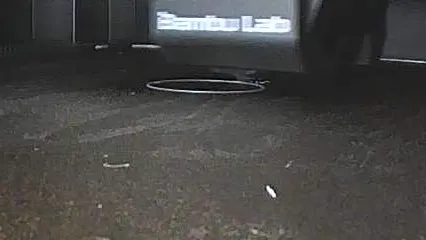

I create prototypes for almost everything I do. From woodwork to 3-D printed scale models to machined functional devices, iterating with a physical prototype is an essential part of the product development process.
Prototyping is a powerful tool for learning and communication. It allows you to quickly test and validate ideas, and to share them with others in a tangible way. I use prototyping to explore design concepts, to troubleshoot problems, and to communicate my ideas to clients and collaborators.
Below are just a few examples of some of the prototypes I've designed and built.